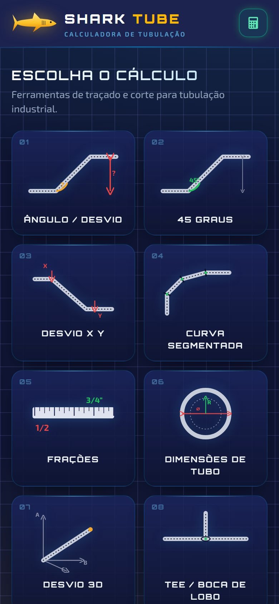
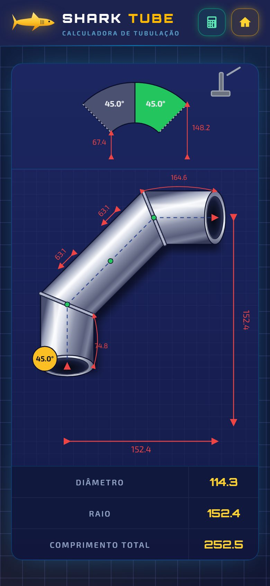
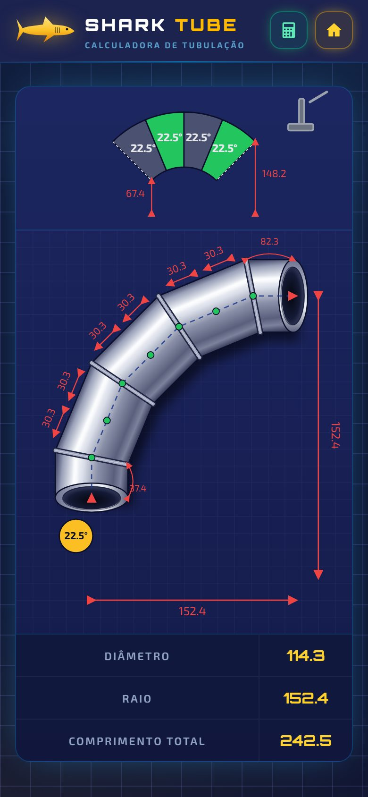
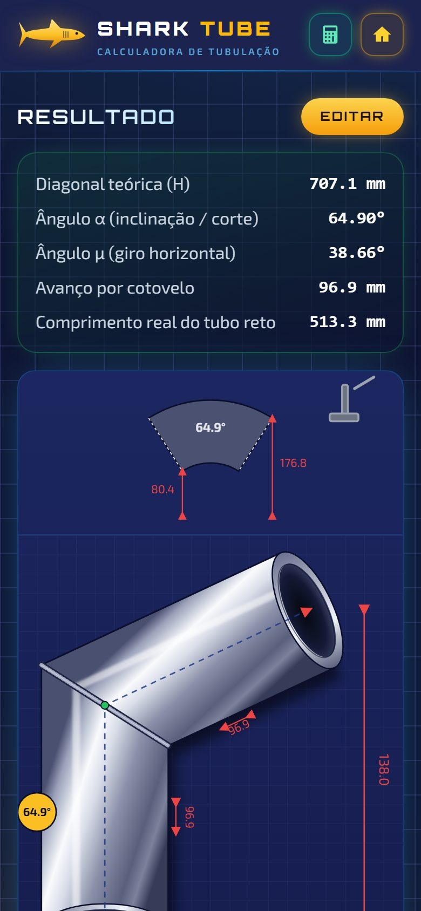
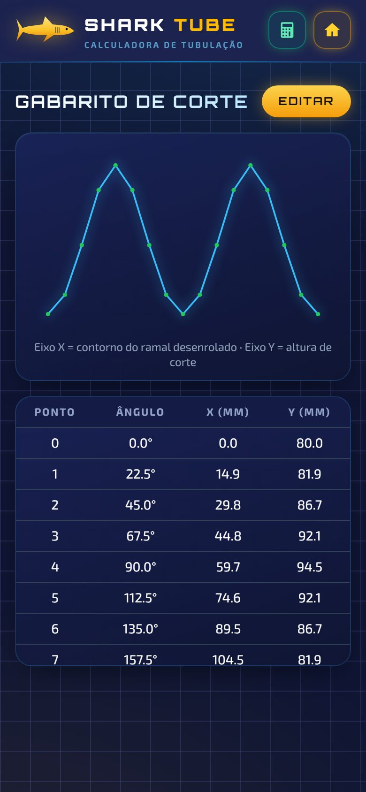
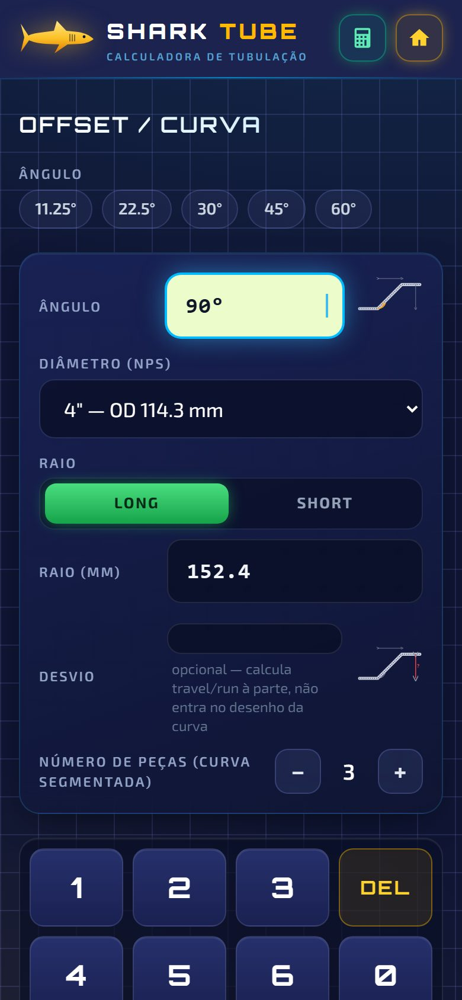
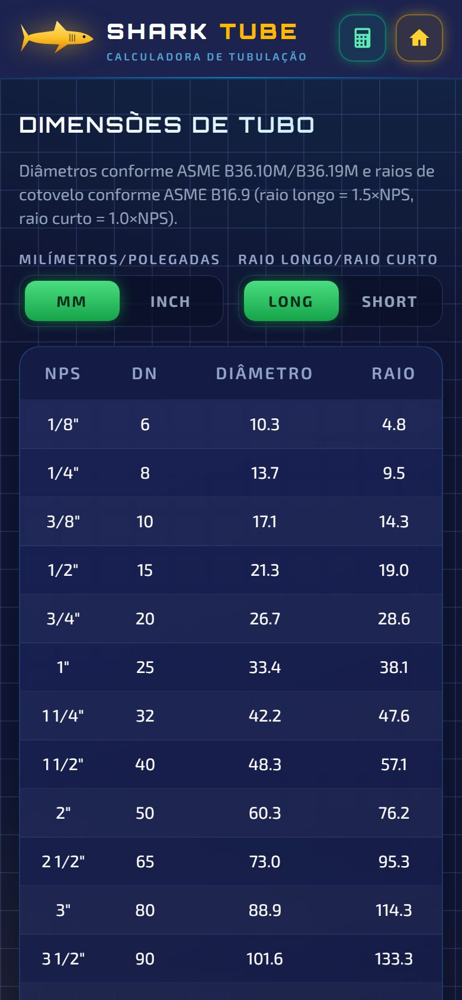

<title>Shark Tube</title>
<meta name="claude:viewport-fit-sides" content="cover">
<meta name="description" content="Shark Tube: o app que calcula e desenha curvas, desvios, gomos e bocas de lobo para tubulistas e caldeireiros.">
<link rel="icon" type="image/svg+xml" href="shark.svg">
<link rel="preconnect" href="https://fonts.googleapis.com">
<link rel="preconnect" href="https://fonts.gstatic.com" crossorigin>
<link rel="stylesheet" href="https://fonts.googleapis.com/css2?family=Exo+2:ital,wght@0,400;0,500;0,600;0,700;1,500&family=JetBrains+Mono:wght@400;600&family=Orbitron:wght@600;800;900&display=swap">
<style>
/* Layout: a página é uma folha de desenho técnico. Grade de projeto ao fundo,
   cotas vermelhas anotando os celulares e um carimbo de folha no rodapé. */
:root {
  --abyss: #0a0f26;
  --navy: #0f1533;
  --deck: #1c234f;
  --panel: #161d4a;
  --steel: #c7ccdb;
  --mist: #93a4c8;
  --ink: #eef2ff;
  --amber: #fbbf24;
  --amber-deep: #f59e0b;
  --sonar: #38bdf8;
  --cut: #ef4444;
  --weld: #22c55e;
  --line: rgba(148, 163, 255, 0.11);
  --font-display: "Orbitron", "Exo 2", system-ui, sans-serif;
  --font-body: "Exo 2", system-ui, -apple-system, "Segoe UI", sans-serif;
  --font-data: "JetBrains Mono", ui-monospace, "Cascadia Mono", Consolas, monospace;
  --gutter-l: max(16px, env(safe-area-inset-left, 0px));
  --gutter-r: max(16px, env(safe-area-inset-right, 0px));
  color-scheme: dark;
}

* { box-sizing: border-box; }
html { scroll-behavior: smooth; overflow-x: clip; }
body {
  margin: 0;
  background-color: var(--navy);
  background-image:
    radial-gradient(1100px 620px at 88% -8%, rgba(56, 189, 248, 0.16), transparent 60%),
    radial-gradient(900px 600px at -12% 38%, rgba(251, 191, 36, 0.07), transparent 60%),
    linear-gradient(var(--line) 1px, transparent 1px),
    linear-gradient(90deg, var(--line) 1px, transparent 1px);
  background-size: auto, auto, 32px 32px, 32px 32px;
  color: var(--ink);
  font-family: var(--font-body);
  font-size: 17px;
  line-height: 1.6;
  overflow-x: hidden;
}
body::before {
  content: "";
  position: fixed;
  inset: 0 0 auto;
  height: env(safe-area-inset-top, 0px);
  z-index: 50;
  background: var(--deck);
}
img { max-width: 100%; display: block; }
a { color: inherit; }
:focus-visible { outline: 2px solid var(--sonar); outline-offset: 3px; border-radius: 6px; }

.wrap {
  width: 100%;
  max-width: 1180px;
  margin: 0 auto;
  padding-left: var(--gutter-l);
  padding-right: var(--gutter-r);
}

h1, h2, h3 { font-family: var(--font-display); text-wrap: balance; margin: 0; letter-spacing: 0.02em; }
p { margin: 0; }

.eyebrow {
  display: inline-flex;
  align-items: center;
  gap: 10px;
  font-family: var(--font-data);
  font-size: 0.78rem;
  letter-spacing: 0.16em;
  text-transform: uppercase;
  color: var(--sonar);
}
.eyebrow::before {
  content: "";
  width: 22px;
  height: 1px;
  background: var(--cut);
  box-shadow: 0 0 0 0 transparent;
}

/* ---------- nav ---------- */
.nav {
  position: sticky;
  top: env(safe-area-inset-top, 0px);
  z-index: 40;
  background: rgba(28, 35, 79, 0.78);
  backdrop-filter: blur(14px);
  -webkit-backdrop-filter: blur(14px);
  border-bottom: 1px solid rgba(56, 189, 248, 0.16);
}
.nav .wrap {
  display: flex;
  align-items: center;
  justify-content: space-between;
  gap: 16px;
  padding-block: 12px;
}
.brand { display: flex; align-items: center; gap: 10px; text-decoration: none; }
.brand svg { width: 56px; height: 28px; filter: drop-shadow(0 0 10px rgba(251, 191, 36, 0.5)); flex-shrink: 0; }
.brand b {
  font-family: var(--font-display);
  font-weight: 900;
  font-size: 1.05rem;
  letter-spacing: 0.14em;
  white-space: nowrap;
}
.brand b span { color: var(--amber); }
.nav-links { display: flex; align-items: center; gap: 28px; }
.nav-links a {
  text-decoration: none;
  font-size: 0.82rem;
  font-weight: 600;
  letter-spacing: 0.14em;
  text-transform: uppercase;
  color: var(--mist);
  transition: color 0.15s;
}
.nav-links a:hover { color: var(--ink); }
@media (max-width: 760px) { .nav-links a:not(.btn) { display: none; } }

.btn {
  display: inline-flex;
  align-items: center;
  justify-content: center;
  gap: 10px;
  padding: 0.95rem 1.5rem;
  border-radius: 14px;
  border: 0;
  cursor: pointer;
  font-family: var(--font-display);
  font-size: 0.82rem;
  font-weight: 800;
  letter-spacing: 0.16em;
  text-transform: uppercase;
  text-decoration: none;
  transition: transform 0.15s, box-shadow 0.2s;
  white-space: nowrap;
}
.btn:active { transform: scale(0.97); }
.btn-amber {
  color: #1a1300 !important;
  background: linear-gradient(180deg, #fcd34d, var(--amber-deep));
  box-shadow: 0 0 0 1px rgba(253, 230, 138, 0.5), 0 10px 30px -8px rgba(251, 191, 36, 0.7), inset 0 1px 0 rgba(255, 255, 255, 0.5);
}
.btn-amber:hover { box-shadow: 0 0 0 1px rgba(253, 230, 138, 0.7), 0 14px 38px -8px rgba(251, 191, 36, 0.9), inset 0 1px 0 rgba(255, 255, 255, 0.5); }
.btn-ghost {
  color: var(--ink);
  background: rgba(148, 163, 255, 0.07);
  border: 1px solid rgba(148, 163, 255, 0.28);
}
.btn-ghost:hover { border-color: var(--sonar); box-shadow: 0 0 22px -8px rgba(56, 189, 248, 0.8); }
.nav .btn { padding: 0.7rem 1.1rem; font-size: 0.7rem; }

/* ---------- hero ---------- */
.hero { padding-block: clamp(32px, 5vw, 64px) clamp(28px, 4vw, 48px); }
.hero .wrap {
  display: grid;
  grid-template-columns: minmax(0, 1.05fr) minmax(0, 0.95fr);
  align-items: center;
  gap: clamp(32px, 5vw, 64px);
}
@media (max-width: 900px) { .hero .wrap { grid-template-columns: minmax(0, 1fr); } }
.hero-copy { display: flex; flex-direction: column; gap: 24px; min-width: 0; }
.hero h1 {
  font-size: clamp(2rem, 6.4vw, 4.6rem);
  overflow-wrap: anywhere;
  font-weight: 900;
  line-height: 1.02;
  text-transform: uppercase;
}
.hero h1 .chrome {
  background: linear-gradient(180deg, #ffffff 0%, #dfe4f0 38%, #8a90a8 62%, #f1f5f9 100%);
  -webkit-background-clip: text;
  background-clip: text;
  color: transparent;
}
.hero h1 .hot { color: var(--amber); text-shadow: 0 0 32px rgba(251, 191, 36, 0.45); }
.hero .lead { font-size: clamp(1.05rem, 1.6vw, 1.22rem); color: #c6cfe6; max-width: 34em; }
.hero-ctas { display: flex; flex-wrap: wrap; gap: 12px; }
.hero-tags { display: flex; flex-wrap: wrap; gap: 8px 18px; font-family: var(--font-data); font-size: 0.8rem; color: var(--mist); }
.hero-tags span { display: inline-flex; align-items: center; gap: 8px; }
.hero-tags span::before { content: ""; width: 7px; height: 7px; border-radius: 50%; background: var(--weld); box-shadow: 0 0 8px var(--weld); }

/* telefone */
.phone {
  position: relative;
  width: 100%;
  max-width: 300px;
  aspect-ratio: 390 / 844;
  border-radius: 42px;
  padding: 10px;
  background: linear-gradient(145deg, #3a4170, #10153a 45%, #2b3263);
  box-shadow:
    0 0 0 1px rgba(199, 204, 219, 0.25),
    inset 0 0 0 1px rgba(255, 255, 255, 0.08),
    0 40px 80px -30px rgba(0, 0, 0, 0.9),
    0 0 60px -20px rgba(56, 189, 248, 0.45);
}
/* barra de status do celular: o print começa abaixo dela, longe do notch */
.phone::before {
  content: "9:41";
  position: absolute;
  z-index: 1;
  top: 10px;
  left: 10px;
  right: 10px;
  height: var(--status-h, 30px);
  padding: 0 22px;
  display: flex;
  align-items: center;
  justify-content: space-between;
  border-radius: 33px 33px 0 0;
  background: var(--deck) linear-gradient(90deg, transparent calc(100% - 38px), rgba(238, 242, 255, 0.85) calc(100% - 38px) calc(100% - 20px), transparent calc(100% - 20px)) no-repeat center / 100% 7px;
  font-family: var(--font-body);
  font-size: 0.66rem;
  font-weight: 700;
  color: var(--ink);
}
.phone::after {
  content: "";
  position: absolute;
  z-index: 2;
  top: 17px;
  left: 50%;
  translate: -50% 0;
  width: 24%;
  height: 15px;
  border-radius: 999px;
  background: #05070f;
}
.phone img {
  width: 100%;
  height: calc(100% - var(--status-h, 30px));
  margin-top: var(--status-h, 30px);
  object-fit: cover;
  object-position: top;
  border-radius: 0 0 33px 33px;
}
.phone .glare {
  position: absolute;
  z-index: 3;
  inset: 10px;
  border-radius: 33px;
  background: linear-gradient(115deg, rgba(255, 255, 255, 0.13), transparent 34%);
  pointer-events: none;
}

.hero-stage {
  position: relative;
  display: flex;
  justify-content: center;
  padding: 24px 56px 56px 24px;
  min-width: 0;
}
.hero-stage .phone.front { z-index: 2; animation: float 7s ease-in-out infinite; }
.hero-stage .phone.back {
  position: absolute;
  max-width: 240px;
  width: 62%;
  top: 70px;
  left: -2%;
  opacity: 0.55;
  filter: saturate(0.8) blur(0.4px);
  transform: rotate(-8deg);
}
@media (max-width: 520px) {
  .hero-stage { padding: 16px 40px 48px 8px; }
  .hero-stage .phone.back { display: none; }
}
@keyframes float { 0%, 100% { transform: translateY(0); } 50% { transform: translateY(-10px); } }

/* cotas vermelhas em volta do telefone */
.dim { position: absolute; color: var(--cut); font-family: var(--font-data); font-size: 0.78rem; pointer-events: none; z-index: 3; }
.dim-v {
  top: 24px;
  bottom: 56px;
  right: 18px;
  width: 1px;
  background: var(--cut);
}
.dim-v::before, .dim-v::after {
  content: "";
  position: absolute;
  left: -6px;
  width: 13px;
  height: 1px;
  background: var(--cut);
}
.dim-v::before { top: 0; }
.dim-v::after { bottom: 0; }
.dim-v span {
  position: absolute;
  top: 50%;
  left: 10px;
  writing-mode: vertical-rl;
  translate: 0 -50%;
  white-space: nowrap;
  letter-spacing: 0.06em;
}
.dim-h {
  left: 50%;
  translate: -50% 0;
  bottom: 16px;
  height: 1px;
  width: min(300px, 72%);
  background: var(--cut);
}
.dim-h::before, .dim-h::after {
  content: "";
  position: absolute;
  top: -6px;
  width: 1px;
  height: 13px;
  background: var(--cut);
}
.dim-h::before { left: 0; }
.dim-h::after { right: 0; }
.dim-h span {
  position: absolute;
  top: 6px;
  left: 50%;
  translate: -50% 0;
  white-space: nowrap;
  background: var(--navy);
  padding-inline: 8px;
}
.callout {
  position: absolute;
  z-index: 4;
  padding: 10px 14px;
  border-radius: 12px;
  background: rgba(10, 15, 38, 0.86);
  border: 1px solid rgba(251, 191, 36, 0.45);
  box-shadow: 0 0 30px -10px rgba(251, 191, 36, 0.6);
  backdrop-filter: blur(6px);
  font-family: var(--font-data);
  font-size: 0.72rem;
  color: var(--mist);
  line-height: 1.35;
}
.callout b { display: block; font-family: var(--font-display); font-size: 1.15rem; color: var(--amber); letter-spacing: 0.04em; }
.callout.c1 { top: 38%; left: 0; }
.callout.c2 { top: 10%; right: 0; border-color: rgba(34, 197, 94, 0.5); box-shadow: 0 0 30px -10px rgba(34, 197, 94, 0.6); }
.callout.c2 b { color: var(--weld); }
@media (max-width: 520px) { .callout { display: none; } }

/* ---------- régua de especificações ---------- */
.ruler { border-block: 1px solid rgba(56, 189, 248, 0.18); background: rgba(10, 15, 38, 0.55); }
.ruler .wrap {
  display: grid;
  grid-template-columns: repeat(4, minmax(0, 1fr));
  padding-block: 0;
}
@media (max-width: 760px) { .ruler .wrap { grid-template-columns: repeat(2, minmax(0, 1fr)); } }
.ruler-cell {
  position: relative;
  padding: 26px 18px 22px;
  min-width: 0;
  background-image: repeating-linear-gradient(90deg, rgba(148, 163, 255, 0.35) 0 1px, transparent 1px 12px);
  background-size: 100% 8px;
  background-repeat: no-repeat;
}
.ruler-cell + .ruler-cell { border-left: 1px solid rgba(56, 189, 248, 0.14); }
@media (max-width: 760px) {
  .ruler-cell:nth-child(3) { border-left: 0; }
  .ruler-cell:nth-child(n + 3) { border-top: 1px solid rgba(56, 189, 248, 0.14); }
}
.ruler-cell b { display: block; font-family: var(--font-display); font-size: clamp(1.15rem, 2.2vw, 1.5rem); color: var(--ink); letter-spacing: 0.04em; }
.ruler-cell span { font-size: 0.86rem; color: var(--mist); }

/* ---------- seções ---------- */
section { padding-block: clamp(36px, 5vw, 64px); }
.section-head { display: flex; flex-direction: column; gap: 12px; max-width: 46rem; margin-bottom: clamp(24px, 3vw, 40px); }
.section-head h2 { font-size: clamp(1.7rem, 4vw, 2.7rem); font-weight: 800; text-transform: uppercase; line-height: 1.1; }
.section-head p { color: #c0c9e2; font-size: 1.08rem; max-width: 40em; }

/* linhas de recurso alternadas */
.features { display: flex; flex-direction: column; gap: clamp(40px, 5vw, 72px); }
.feature {
  display: grid;
  grid-template-columns: minmax(0, 0.9fr) minmax(0, 1.1fr);
  align-items: center;
  gap: clamp(28px, 6vw, 80px);
}
.feature:nth-child(even) .feature-media { order: 2; }
@media (max-width: 860px) {
  .feature { grid-template-columns: minmax(0, 1fr); }
  .feature:nth-child(even) .feature-media { order: 0; }
}
.feature-media { position: relative; display: flex; justify-content: center; min-width: 0; }
.feature-media::before {
  content: "";
  position: absolute;
  inset: 12% 8%;
  border-radius: 50%;
  background: radial-gradient(closest-side, rgba(56, 189, 248, 0.25), transparent);
  filter: blur(10px);
}
.feature-media .phone { max-width: 280px; }
.feature-copy { display: flex; flex-direction: column; gap: 18px; min-width: 0; }
.feature-copy .tag {
  align-self: flex-start;
  font-family: var(--font-data);
  font-size: 0.74rem;
  letter-spacing: 0.14em;
  text-transform: uppercase;
  color: var(--amber);
  padding: 5px 10px;
  border: 1px solid rgba(251, 191, 36, 0.4);
  border-radius: 999px;
}
.feature-copy h3 { font-size: clamp(1.4rem, 3vw, 2rem); font-weight: 800; text-transform: uppercase; line-height: 1.15; }
.feature-copy p { color: #c0c9e2; max-width: 34em; }
.specs { list-style: none; margin: 4px 0 0; padding: 0; display: grid; gap: 10px; }
.specs li {
  display: grid;
  grid-template-columns: auto minmax(0, 1fr);
  gap: 12px;
  align-items: baseline;
  padding-bottom: 10px;
  border-bottom: 1px dashed rgba(148, 163, 255, 0.18);
  font-size: 0.98rem;
  color: #d5dcef;
}
.specs li code {
  font-family: var(--font-data);
  font-size: 0.82rem;
  color: var(--cut);
  min-width: 4.5rem;
}

/* galeria */
.gallery-band { padding-block: clamp(28px, 4vw, 48px); background: linear-gradient(180deg, transparent, rgba(10, 15, 38, 0.6) 20%, rgba(10, 15, 38, 0.6) 80%, transparent); }
.gallery {
  display: flex;
  gap: 28px;
  overflow-x: auto;
  scroll-snap-type: x mandatory;
  padding: 20px var(--gutter-r) 28px var(--gutter-l);
  scrollbar-width: thin;
  scrollbar-color: rgba(56, 189, 248, 0.5) transparent;
}
.gallery figure {
  flex: 0 0 auto;
  width: min(240px, 68vw);
  margin: 0;
  scroll-snap-align: center;
  display: flex;
  flex-direction: column;
  gap: 14px;
}
.gallery .phone { max-width: none; border-radius: 34px; padding: 8px; --status-h: 24px; }
.gallery .phone img { border-radius: 0 0 27px 27px; }
.gallery .phone .glare { inset: 8px; border-radius: 27px; }
.gallery .phone::before { top: 8px; left: 8px; right: 8px; border-radius: 27px 27px 0 0; padding: 0 18px; font-size: 0.58rem; }
.gallery .phone::after { top: 13px; height: 12px; }
.gallery figcaption { display: flex; flex-direction: column; gap: 2px; }
.gallery figcaption b { font-family: var(--font-display); font-size: 0.82rem; letter-spacing: 0.12em; text-transform: uppercase; }
.gallery figcaption span { font-size: 0.88rem; color: var(--mist); }
.gallery-hint { font-family: var(--font-data); font-size: 0.78rem; color: var(--mist); }

/* como funciona */
.steps { display: grid; grid-template-columns: repeat(3, minmax(0, 1fr)); gap: 0; counter-reset: step; }
@media (max-width: 860px) { .steps { grid-template-columns: minmax(0, 1fr); } }
.step {
  position: relative;
  padding: 28px 28px 32px;
  border-top: 1px solid rgba(56, 189, 248, 0.25);
  min-width: 0;
}
.step + .step { border-left: 1px solid rgba(56, 189, 248, 0.12); }
@media (max-width: 860px) { .step + .step { border-left: 0; } }
.step::before {
  counter-increment: step;
  content: "0" counter(step);
  display: block;
  margin-bottom: 18px;
  font-family: var(--font-display);
  font-size: 2.6rem;
  font-weight: 900;
  line-height: 1;
  color: transparent;
  -webkit-text-stroke: 1px rgba(56, 189, 248, 0.6);
}
.step::after {
  content: "";
  position: absolute;
  top: -4px;
  left: 28px;
  width: 7px;
  height: 7px;
  border-radius: 50%;
  background: var(--sonar);
  box-shadow: 0 0 12px var(--sonar);
}
.step h3 { font-size: 1.05rem; font-weight: 800; letter-spacing: 0.08em; text-transform: uppercase; margin-bottom: 10px; }
.step p { color: #c0c9e2; font-size: 0.98rem; }

/* calculadora ao vivo */
.lab {
  display: grid;
  grid-template-columns: minmax(0, 0.95fr) minmax(0, 1.05fr);
  gap: 0;
  border-radius: 24px;
  overflow: hidden;
  border: 1px solid rgba(56, 189, 248, 0.25);
  background: linear-gradient(160deg, rgba(28, 38, 96, 0.85), rgba(10, 15, 38, 0.92));
  box-shadow: 0 0 80px -30px rgba(56, 189, 248, 0.55);
}
@media (max-width: 900px) { .lab { grid-template-columns: minmax(0, 1fr); } }
.lab-controls { padding: clamp(22px, 3vw, 36px); display: flex; flex-direction: column; gap: 22px; min-width: 0; }
.lab-row { display: flex; flex-direction: column; gap: 8px; }
.lab-row label, .lab-row .lbl {
  font-size: 0.72rem;
  font-weight: 600;
  letter-spacing: 0.16em;
  text-transform: uppercase;
  color: var(--mist);
}
.lab select {
  width: 100%;
  padding: 0.8rem 1rem;
  border-radius: 12px;
  border: 1px solid rgba(148, 163, 255, 0.25);
  background: var(--abyss);
  color: var(--ink);
  font-family: var(--font-body);
  font-size: 1rem;
}
.seg { display: flex; gap: 4px; padding: 4px; border-radius: 12px; background: var(--abyss); border: 1px solid rgba(148, 163, 255, 0.18); flex-wrap: wrap; }
.seg button {
  flex: 1 1 0;
  min-width: 3.4rem;
  padding: 0.55rem 0.4rem;
  border: 0;
  border-radius: 9px;
  background: transparent;
  color: var(--mist);
  font-family: var(--font-display);
  font-size: 0.74rem;
  font-weight: 800;
  letter-spacing: 0.1em;
  cursor: pointer;
}
.seg button[aria-pressed="true"] {
  color: #062b17;
  background: linear-gradient(180deg, #4ade80, #16a34a);
  box-shadow: 0 0 14px -3px rgba(34, 197, 94, 0.8);
}
.lab-out { padding: clamp(18px, 3vw, 32px); display: flex; flex-direction: column; gap: 18px; background: rgba(10, 15, 38, 0.55); border-left: 1px solid rgba(56, 189, 248, 0.15); min-width: 0; }
@media (max-width: 900px) { .lab-out { border-left: 0; border-top: 1px solid rgba(56, 189, 248, 0.15); } }
.lab-svg { width: 100%; height: auto; aspect-ratio: 4 / 3; border-radius: 16px; background-color: #141b4a; background-image: linear-gradient(rgba(148, 163, 255, 0.08) 1px, transparent 1px), linear-gradient(90deg, rgba(148, 163, 255, 0.08) 1px, transparent 1px); background-size: 20px 20px; }
.readout { display: grid; grid-template-columns: repeat(2, minmax(0, 1fr)); gap: 1px; border-radius: 14px; overflow: hidden; background: rgba(148, 163, 255, 0.14); }
@media (max-width: 420px) { .readout { grid-template-columns: minmax(0, 1fr); } }
.readout div { background: #0d1336; padding: 12px 14px; display: flex; flex-direction: column; gap: 2px; min-width: 0; }
.readout span { font-size: 0.68rem; font-weight: 600; letter-spacing: 0.14em; text-transform: uppercase; color: var(--mist); }
.readout output { font-family: var(--font-display); font-size: 1.3rem; font-weight: 800; color: var(--amber); font-variant-numeric: tabular-nums; }
.readout output.green { color: var(--weld); }
.formula { font-family: var(--font-data); font-size: 0.8rem; color: var(--mist); line-height: 1.7; }
.formula b { color: var(--ink); font-weight: 600; }
.note { font-size: 0.85rem; color: var(--mist); }

/* lista de cálculos */
.calcs { display: grid; grid-template-columns: repeat(4, minmax(0, 1fr)); border-top: 1px solid rgba(56, 189, 248, 0.2); border-left: 1px solid rgba(56, 189, 248, 0.2); }
@media (max-width: 960px) { .calcs { grid-template-columns: repeat(2, minmax(0, 1fr)); } }
@media (max-width: 480px) { .calcs { grid-template-columns: minmax(0, 1fr); } }
.calc {
  padding: 24px 22px 26px;
  border-right: 1px solid rgba(56, 189, 248, 0.2);
  border-bottom: 1px solid rgba(56, 189, 248, 0.2);
  display: flex;
  flex-direction: column;
  gap: 10px;
  min-width: 0;
  transition: background 0.2s;
}
.calc:hover { background: rgba(56, 189, 248, 0.06); }
.calc h3 { font-size: 0.9rem; font-weight: 800; letter-spacing: 0.1em; text-transform: uppercase; }
.calc p { font-size: 0.93rem; color: #b9c3de; }
.calc small { margin-top: auto; font-family: var(--font-data); font-size: 0.74rem; color: var(--cut); }

/* CTA final */
.cta-band {
  position: relative;
  overflow: hidden;
  border-radius: 28px;
  padding: clamp(36px, 6vw, 72px);
  background:
    radial-gradient(600px 300px at 85% 20%, rgba(251, 191, 36, 0.22), transparent 60%),
    radial-gradient(500px 300px at 10% 100%, rgba(56, 189, 248, 0.2), transparent 60%),
    linear-gradient(160deg, #1c2660, #0d1238);
  border: 1px solid rgba(251, 191, 36, 0.35);
  display: grid;
  grid-template-columns: minmax(0, 1.3fr) minmax(0, 0.7fr);
  gap: 32px;
  align-items: center;
}
@media (max-width: 860px) { .cta-band { grid-template-columns: minmax(0, 1fr); } }
.cta-band h2 { font-size: clamp(1.8rem, 4.6vw, 3.1rem); font-weight: 900; text-transform: uppercase; line-height: 1.05; }
.cta-band h2 span { color: var(--amber); }
.cta-band p { margin-top: 16px; color: #c6cfe6; max-width: 32em; }
.cta-actions { display: flex; flex-direction: column; gap: 12px; align-items: stretch; }
.cta-shark {
  position: absolute;
  right: -40px;
  bottom: -30px;
  width: 340px;
  height: 170px;
  opacity: 0.07;
  pointer-events: none;
}
.contact-line { font-family: var(--font-data); font-size: 0.85rem; color: var(--mist); text-align: center; user-select: all; }

/* carimbo (rodapé em forma de legenda de desenho) */
footer { padding-block: 16px 40px; }
.titleblock {
  display: grid;
  grid-template-columns: minmax(0, 1.6fr) repeat(4, minmax(0, 1fr));
  border: 1px solid rgba(199, 204, 219, 0.35);
  font-family: var(--font-data);
  font-size: 0.74rem;
}
@media (max-width: 860px) { .titleblock { grid-template-columns: repeat(2, minmax(0, 1fr)); } .titleblock .tb-main { grid-column: 1 / -1; } }
.titleblock > div { padding: 12px 14px; border-right: 1px solid rgba(199, 204, 219, 0.2); border-bottom: 1px solid rgba(199, 204, 219, 0.2); min-width: 0; display: flex; flex-direction: column; gap: 4px; }
.titleblock span { color: var(--mist); text-transform: uppercase; letter-spacing: 0.12em; font-size: 0.64rem; }
.titleblock b { color: var(--ink); font-weight: 600; }
.tb-main { flex-direction: row !important; align-items: center; gap: 12px !important; }
.tb-main svg { width: 48px; height: 24px; flex-shrink: 0; }
.tb-main b { font-family: var(--font-display); font-weight: 900; letter-spacing: 0.14em; font-size: 0.95rem; }

@media (prefers-reduced-motion: reduce) {
  * { animation: none !important; transition: none !important; scroll-behavior: auto !important; }
}
</style>

<svg width="0" height="0" style="position:absolute" aria-hidden="true">
  <defs>
    <linearGradient id="sharkGrad" x1="0" y1="0" x2="0" y2="1">
      <stop offset="0%" stop-color="#fde68a"/>
      <stop offset="55%" stop-color="#fbbf24"/>
      <stop offset="100%" stop-color="#d97706"/>
    </linearGradient>
    <symbol id="shark" viewBox="0 0 64 32">
      <path fill="url(#sharkGrad)" d="M63 17C60 14 56 12 50 11L40 10L32 1.5L29.5 10L18 11.5C13 12 10 13 8 14L1.5 4L4.5 15.5L1.5 28L8.5 18C12 19.5 16 20.5 22 21L34 21.5L30 29L41 21.5L52 21C57 20.5 60.5 19 63 17Z"/>
      <circle cx="55" cy="15" r="1.2" fill="#0f1533"/>
      <path d="M47 13.5v5M45 13.2v5.4M43 13v5.6" stroke="#0f1533" stroke-width="0.9" stroke-linecap="round" opacity="0.55"/>
    </symbol>
  </defs>
</svg>

<header class="nav">
  <div class="wrap">
    <a class="brand" href="#topo" aria-label="Shark Tube, voltar ao topo">
      <svg aria-hidden="true"><use href="#shark"/></svg>
      <b>SHARK<span> TUBE</span></b>
    </a>
    <nav class="nav-links" aria-label="Seções">
      <a href="#telas">Telas</a>
      <a href="#calculos">Cálculos</a>
      <a href="#precisao">Precisão</a>
      <a class="btn btn-amber" href="#contato">Quero o app</a>
    </nav>
  </div>
</header>

<main id="topo">
  <!-- HERO -->
  <section class="hero">
    <div class="wrap">
      <div class="hero-copy">
        <span class="eyebrow">App para tubulistas e caldeireiros</span>
        <h1><span class="chrome">Corte certo</span><br>na <span class="hot">primeira</span><br><span class="chrome">vez.</span></h1>
        <p class="lead">Digite o ângulo, o diâmetro e o raio. O Shark Tube devolve o desenho do tubo com cada cota de corte, gomo por gomo, pronto para levar para a máquina.</p>
        <div class="hero-ctas">
          <a class="btn btn-amber" href="#contato">Quero o Shark Tube</a>
          <a class="btn btn-ghost" href="#telas">Ver as telas</a>
        </div>
        <div class="hero-tags">
          <span>Funciona sem internet</span>
          <span>Teclado para usar de luva</span>
          <span>Tabela ASME</span>
        </div>
      </div>

      <div class="hero-stage" aria-label="Telas do Shark Tube">
        <div class="phone back"><div class="glare"></div></div>
        <div class="phone front"><div class="glare"></div></div>
        <div class="dim dim-v"><span>Ø 114.3 · R 152.4</span></div>
        <div class="dim dim-h"><span>90° em 3 gomos</span></div>
        <div class="callout c1"><b>63.1 mm</b>meia peça<br>R × tan 22.5°</div>
        <div class="callout c2"><b>22.5°</b>ângulo de corte</div>
      </div>
    </div>
  </section>

  <!-- RÉGUA -->
  <div class="ruler">
    <div class="wrap">
      <div class="ruler-cell"><b>8 cálculos</b><span>do offset simples ao gabarito de TEE</span></div>
      <div class="ruler-cell"><b>1/8" a 48"</b><span>tabela de diâmetros e raios</span></div>
      <div class="ruler-cell"><b>mm e pol.</b><span>com frações até 1/64"</span></div>
      <div class="ruler-cell"><b>Offline</b><span>instala na tela do celular</span></div>
    </div>
  </div>

  <!-- RECURSOS -->
  <section id="telas">
    <div class="wrap">
      <div class="section-head">
        <span class="eyebrow">O que aparece na tela</span>
        <h2>O desenho que você levaria horas para traçar</h2>
        <p>Nada de folha de rascunho e tabela de seno. Cada resultado sai desenhado, com as cotas no lugar onde você vai medir.</p>
      </div>

      <div class="features">
        <article class="feature">
          <div class="feature-media">
            <div class="phone"><div class="glare"></div></div>
          </div>
          <div class="feature-copy">
            <span class="tag">Curva segmentada</span>
            <h3>Gomo por gomo, com a solda marcada</h3>
            <p>Escolha de 2 a 8 peças. O app calcula o ângulo de corte de cada junta e desenha a curva com o cordão de solda, os arcos interno e externo e o ponto médio de cada peça.</p>
            <ul class="specs">
              <li><code>22.5°</code>ângulo de corte de uma curva de 90° em 5 gomos</li>
              <li><code>30.3 mm</code>avanço de cada meia peça, tubo de 4"</li>
              <li><code>82.3 mm</code>arco externo da última junta</li>
            </ul>
          </div>
        </article>

        <article class="feature">
          <div class="feature-media">
            <div class="phone"><div class="glare"></div></div>
          </div>
          <div class="feature-copy">
            <span class="tag">Desvio 3D</span>
            <h3>Subiu e virou ao mesmo tempo? Resolvido.</h3>
            <p>Informe a altura e os dois deslocamentos horizontais. O Shark Tube calcula a diagonal no espaço, o ângulo de inclinação, o giro e o tubo reto já descontando os dois cotovelos.</p>
            <ul class="specs">
              <li><code>707.1</code>diagonal para A 300, B 400 e C 500 mm</li>
              <li><code>64.90°</code>ângulo de corte dos cotovelos</li>
              <li><code>513.3</code>tubo reto real, já sem o avanço</li>
            </ul>
          </div>
        </article>

        <article class="feature">
          <div class="feature-media">
            <div class="phone"><div class="glare"></div></div>
          </div>
          <div class="feature-copy">
            <span class="tag">TEE / boca de lobo</span>
            <h3>O gabarito da boca de lobo, ponto a ponto</h3>
            <p>Diâmetro do ramal, do principal, ângulo e excentricidade. Você recebe a curva planificada e a tabela de cada ponto para riscar no tubo e cortar no encaixe.</p>
            <ul class="specs">
              <li><code>16 pts</code>marcados ao redor do ramal</li>
              <li><code>X / Y</code>distância desenrolada e altura de corte</li>
              <li><code>0–180°</code>ramal reto ou inclinado</li>
            </ul>
          </div>
        </article>
      </div>
    </div>
  </section>

  <!-- GALERIA -->
  <div class="gallery-band">
    <div class="wrap"><p class="gallery-hint">Arraste para ver todas as telas →</p></div>
    <div class="gallery" tabindex="0" aria-label="Galeria de telas">
      <figure><div class="phone"><div class="glare"></div></div><figcaption><b>Início</b><span>Os oito cálculos em um toque</span></figcaption></figure>
      <figure><div class="phone"><div class="glare"></div></div><figcaption><b>Entrada</b><span>Teclado grande, sem o teclado do celular</span></figcaption></figure>
      <figure><div class="phone"><div class="glare"></div></div><figcaption><b>Curva 90°</b><span>Vista de cima e desenho com cotas</span></figcaption></figure>
      <figure><div class="phone"><div class="glare"></div></div><figcaption><b>5 gomos</b><span>Mais peças, curva mais suave</span></figcaption></figure>
      <figure><div class="phone"><div class="glare"></div></div><figcaption><b>Desvio 3D</b><span>Diagonal, α, µ e tubo reto</span></figcaption></figure>
      <figure><div class="phone"><div class="glare"></div></div><figcaption><b>Boca de lobo</b><span>Curva de corte e tabela</span></figcaption></figure>
      <figure><div class="phone"><div class="glare"></div></div><figcaption><b>Dimensões</b><span>NPS, DN, diâmetro e raio</span></figcaption></figure>
    </div>
  </div>

  <!-- COMO FUNCIONA -->
  <section>
    <div class="wrap">
      <div class="section-head">
        <span class="eyebrow">Na obra</span>
        <h2>Três toques do problema ao corte</h2>
      </div>
      <div class="steps">
        <div class="step"><h3>Escolha o cálculo</h3><p>Curva, desvio, 45 graus, desvio 3D, boca de lobo. Cada botão mostra o tipo de corte que ele resolve.</p></div>
        <div class="step"><h3>Digite as medidas</h3><p>Diâmetro e raio vêm prontos da tabela. Você só ajusta o ângulo e o que for diferente da sua obra.</p></div>
        <div class="step"><h3>Toque em Criar e corte</h3><p>O desenho sai com as cotas em milímetros. É ler, riscar no tubo e passar para a máquina.</p></div>
      </div>
    </div>
  </section>

  <!-- CALCULADORA AO VIVO -->
  <section id="precisao">
    <div class="wrap">
      <div class="section-head">
        <span class="eyebrow">Teste agora</span>
        <h2>A mesma conta do app, aqui na página</h2>
        <p>Mude o tubo, o ângulo e o número de gomos. Com 4", raio longo, 90° e 3 gomos, os números batem com o print lá de cima.</p>
      </div>

      <div class="lab">
        <div class="lab-controls">
          <div class="lab-row">
            <label for="nps">Diâmetro do tubo</label>
            <select id="nps">
              <option value="2">2" · Ø 60.3 mm</option>
              <option value="3">3" · Ø 88.9 mm</option>
              <option value="4" selected>4" · Ø 114.3 mm</option>
              <option value="6">6" · Ø 168.3 mm</option>
              <option value="8">8" · Ø 219.1 mm</option>
              <option value="10">10" · Ø 273.0 mm</option>
              <option value="12">12" · Ø 323.8 mm</option>
            </select>
          </div>
          <div class="lab-row">
            <span class="lbl" id="lbl-raio">Raio da curva</span>
            <div class="seg" role="group" aria-labelledby="lbl-raio" id="raio">
              <button type="button" data-v="1.5" aria-pressed="true">Longo 1.5D</button>
              <button type="button" data-v="1" aria-pressed="false">Curto 1D</button>
            </div>
          </div>
          <div class="lab-row">
            <span class="lbl" id="lbl-ang">Ângulo total</span>
            <div class="seg" role="group" aria-labelledby="lbl-ang" id="ang">
              <button type="button" data-v="30" aria-pressed="false">30°</button>
              <button type="button" data-v="45" aria-pressed="false">45°</button>
              <button type="button" data-v="60" aria-pressed="false">60°</button>
              <button type="button" data-v="90" aria-pressed="true">90°</button>
            </div>
          </div>
          <div class="lab-row">
            <span class="lbl" id="lbl-gomos">Número de gomos</span>
            <div class="seg" role="group" aria-labelledby="lbl-gomos" id="gomos">
              <button type="button" data-v="2" aria-pressed="false">2</button>
              <button type="button" data-v="3" aria-pressed="true">3</button>
              <button type="button" data-v="4" aria-pressed="false">4</button>
              <button type="button" data-v="5" aria-pressed="false">5</button>
              <button type="button" data-v="6" aria-pressed="false">6</button>
            </div>
          </div>
          <p class="formula">
            corte = <b>ângulo ÷ (2 × juntas)</b><br>
            meia peça = <b>R × tan(corte)</b><br>
            arco externo = <b>(R + Ø/2) × giro</b>
          </p>
        </div>
        <div class="lab-out">
          <svg class="lab-svg" id="labSvg" viewBox="0 0 400 300" role="img" aria-label="Desenho da curva segmentada calculada"></svg>
          <div class="readout">
            <div><span>Ângulo de corte</span><output id="oCut">22.5°</output></div>
            <div><span>Giro por junta</span><output id="oStep">45.0°</output></div>
            <div><span>Meia peça</span><output id="oHalf" class="green">63.1 mm</output></div>
            <div><span>Peça interna</span><output id="oInner" class="green">126.2 mm</output></div>
            <div><span>Arco externo</span><output id="oArcOut">164.6 mm</output></div>
            <div><span>Arco interno</span><output id="oArcIn">74.8 mm</output></div>
          </div>
          <p class="note">Raio pela norma ASME B16.9: longo = 1.5 × NPS, curto = 1 × NPS.</p>
        </div>
      </div>
    </div>
  </section>

  <!-- CÁLCULOS -->
  <section id="calculos">
    <div class="wrap">
      <div class="section-head">
        <span class="eyebrow">Tudo em um app</span>
        <h2>Oito cálculos de campo</h2>
      </div>
      <div class="calcs">
        <div class="calc"><h3>Ângulo / desvio</h3><p>Descubra o ângulo, a diagonal ou o avanço a partir de duas medidas.</p><small>sin · tan · cos</small></div>
        <div class="calc"><h3>45 graus</h3><p>O atalho do dia a dia para desvios com curva de 45°.</p><small>diagonal = desvio × 1.414</small></div>
        <div class="calc"><h3>Desvio X Y</h3><p>Desvio em dois planos ao mesmo tempo, com o desvio verdadeiro.</p><small>√(X² + Y²)</small></div>
        <div class="calc"><h3>Curva segmentada</h3><p>Curva em gomos de 2 a 8 peças, com desenho e cotas.</p><small>R × tan(corte)</small></div>
        <div class="calc"><h3>Desvio 3D</h3><p>Altura e dois deslocamentos: diagonal, α, µ e tubo reto.</p><small>√(A² + B² + C²)</small></div>
        <div class="calc"><h3>TEE / boca de lobo</h3><p>Gabarito de corte do ramal, reto ou inclinado, com excentricidade.</p><small>4 × i pontos</small></div>
        <div class="calc"><h3>Dimensões de tubo</h3><p>NPS, DN, diâmetro externo e raio de cotovelo, em mm ou polegada.</p><small>ASME B36.10 · B16.9</small></div>
        <div class="calc"><h3>Frações</h3><p>Converta decimal em fração de polegada, de 1/2 a 1/64.</p><small>1.3125" = 1 5/16"</small></div>
      </div>
    </div>
  </section>

  <!-- CTA -->
  <section id="contato">
    <div class="wrap">
      <div class="cta-band">
        <svg class="cta-shark" aria-hidden="true"><use href="#shark"/></svg>
        <div>
          <h2>Leve o <span>Shark Tube</span> para a obra</h2>
          <p>Instale no celular em segundos e use mesmo sem sinal. Fale com a gente para liberar o acesso para você ou para a sua equipe.</p>
        </div>
        <div class="cta-actions">
          <a class="btn btn-amber" id="ctaWhats" href="https://wa.me/5500000000000" target="_blank" rel="noopener">Chamar no WhatsApp</a>
          <a class="btn btn-ghost" href="#precisao">Testar a calculadora</a>
          <p class="contact-line" id="contactLine">WhatsApp: (00) 00000-0000</p>
        </div>
      </div>
    </div>
  </section>
</main>

<footer>
  <div class="wrap">
    <div class="titleblock">
      <div class="tb-main"><svg aria-hidden="true"><use href="#shark"/></svg><b>SHARK TUBE</b></div>
      <div><span>Folha</span><b>01 / 01</b></div>
      <div><span>Unidade</span><b>mm · pol</b></div>
      <div><span>Norma</span><b>ASME B16.9</b></div>
      <div><span>Revisão</span><b>2026</b></div>
    </div>
  </div>
</footer>

<script>
(function () {
  const OD = { 2: 60.3, 3: 88.9, 4: 114.3, 6: 168.3, 8: 219.1, 10: 273.0, 12: 323.8 };
  const state = { nps: 4, k: 1.5, ang: 90, n: 3 };
  const rad = (d) => (d * Math.PI) / 180;
  const f1 = (v) => v.toFixed(1);

  function wireSeg(id, key) {
    const group = document.getElementById(id);
    group.addEventListener("click", (e) => {
      const b = e.target.closest("button");
      if (!b) return;
      group.querySelectorAll("button").forEach((x) => x.setAttribute("aria-pressed", String(x === b)));
      state[key] = parseFloat(b.dataset.v);
      render();
    });
  }
  wireSeg("raio", "k");
  wireSeg("ang", "ang");
  wireSeg("gomos", "n");
  document.getElementById("nps").addEventListener("change", (e) => {
    state.nps = parseFloat(e.target.value);
    render();
  });

  function render() {
    const D = OD[state.nps];
    const R = state.k * state.nps * 25.4;
    const joints = state.n - 1;
    const cut = state.ang / (2 * joints);
    const step = 2 * cut;
    const half = R * Math.tan(rad(cut));
    const arcOut = (R + D / 2) * rad(step);
    const arcIn = Math.max(R - D / 2, 0) * rad(step);

    document.getElementById("oCut").textContent = f1(cut) + "°";
    document.getElementById("oStep").textContent = f1(step) + "°";
    document.getElementById("oHalf").textContent = f1(half) + " mm";
    document.getElementById("oInner").textContent = state.n > 2 ? f1(2 * half) + " mm" : "—";
    document.getElementById("oArcOut").textContent = f1(arcOut) + " mm";
    document.getElementById("oArcIn").textContent = f1(arcIn) + " mm";

    // traçado: parte na vertical e gira "step" graus a cada junta
    const pts = [[0, 0]];
    const dirs = [];
    let x = 0, y = 0;
    for (let k = 0; k < state.n; k++) {
      const len = k === 0 || k === state.n - 1 ? half : 2 * half;
      const d = 90 - k * step;
      dirs.push(d);
      x += len * Math.cos(rad(d));
      y += len * Math.sin(rad(d));
      pts.push([x, y]);
    }
    const xs = pts.map((p) => p[0]), ys = pts.map((p) => p[1]);
    const half_w = D / 2 * 0.62;
    const minX = Math.min(...xs) - half_w, maxX = Math.max(...xs) + half_w;
    const minY = Math.min(...ys) - half_w, maxY = Math.max(...ys) + half_w;
    const W = 400, H = 300, pad = 36;
    const s = Math.min((W - 2 * pad) / (maxX - minX || 1), (H - 2 * pad) / (maxY - minY || 1));
    const ox = (W - (maxX - minX) * s) / 2, oy = (H - (maxY - minY) * s) / 2;
    const P = ([px, py]) => [ox + (px - minX) * s, H - oy - (py - minY) * s];

    const left = [], right = [];
    pts.forEach((p, i) => {
      let nd, hw = half_w;
      if (i === 0) nd = dirs[0] + 90;
      else if (i === pts.length - 1) nd = dirs[dirs.length - 1] + 90;
      else { nd = (dirs[i - 1] + dirs[i]) / 2 + 90; hw = half_w / Math.cos(rad(cut)); }
      left.push([p[0] + hw * Math.cos(rad(nd)), p[1] + hw * Math.sin(rad(nd))]);
      right.push([p[0] - hw * Math.cos(rad(nd)), p[1] - hw * Math.sin(rad(nd))]);
    });

    let svg = `<defs><filter id="lsh" x="-20%" y="-20%" width="140%" height="140%"><feGaussianBlur stdDeviation="5"/></filter></defs>`;
    const band = [...left.map(P), ...right.map(P).reverse()].map((q, i) => `${i ? "L" : "M"}${q[0].toFixed(1)},${q[1].toFixed(1)}`).join(" ") + "Z";
    svg += `<path d="${band}" fill="rgba(0,0,0,0.55)" transform="translate(5 8)" filter="url(#lsh)"/>`;
    for (let k = 0; k < state.n; k++) {
      const l0 = P(left[k]), l1 = P(left[k + 1]), r1 = P(right[k + 1]), r0 = P(right[k]);
      const g = `lg${k}`;
      svg += `<linearGradient id="${g}" gradientUnits="userSpaceOnUse" x1="${(l0[0] + l1[0]) / 2}" y1="${(l0[1] + l1[1]) / 2}" x2="${(r0[0] + r1[0]) / 2}" y2="${(r0[1] + r1[1]) / 2}">
        <stop offset="0" stop-color="#4a5070"/><stop offset=".1" stop-color="#9aa1b9"/><stop offset=".27" stop-color="#f8fafc"/>
        <stop offset=".4" stop-color="#d9dde8"/><stop offset=".6" stop-color="#8a90a8"/><stop offset=".82" stop-color="#5a607c"/>
        <stop offset=".92" stop-color="#7c829c"/><stop offset="1" stop-color="#363c58"/></linearGradient>`;
      svg += `<path d="M${l0} L${l1} L${r1} L${r0}Z" fill="url(#${g})"/>`;
    }
    svg += `<path d="${band}" fill="none" stroke="#0b0f2b" stroke-width="1.4" stroke-linejoin="round"/>`;
    for (let i = 1; i < pts.length - 1; i++) {
      const a = P(left[i]), b = P(right[i]);
      svg += `<line x1="${a[0]}" y1="${a[1]}" x2="${b[0]}" y2="${b[1]}" stroke="#1f2440" stroke-width="6" stroke-linecap="round"/>`;
      svg += `<line x1="${a[0]}" y1="${a[1]}" x2="${b[0]}" y2="${b[1]}" stroke="#a3a9c0" stroke-width="3.4" stroke-dasharray="2 2.2" stroke-linecap="round"/>`;
    }
    const cl = pts.map(P).map((q, i) => `${i ? "L" : "M"}${q[0].toFixed(1)},${q[1].toFixed(1)}`).join(" ");
    svg += `<path d="${cl}" fill="none" stroke="#1e3a8a" stroke-width="1.4" stroke-dasharray="6 5"/>`;
    for (let i = 1; i < pts.length - 1; i++) {
      const c = P(pts[i]);
      svg += `<circle cx="${c[0]}" cy="${c[1]}" r="3.5" fill="#22c55e" stroke="#0b0f2b"/>`;
    }
    document.getElementById("labSvg").innerHTML = svg;
  }
  render();
})();
</script>
